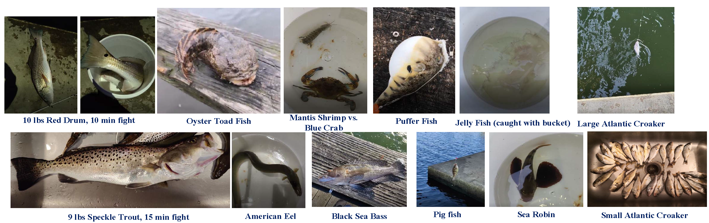

Dr. Cong Wang is professor at the College of Control Science and Engineering, Zhejiang University in Hangzhou, China, where he was born and raised. Cong received his Ph.D from the Department of Electrical and Computer Engineering, Stony Brook University (16'), advised by Dr. Yuanyuan Yang, B. Eng in Information Engineering from the Chinese University of Hong Kong (08') and M. Sc in Electrical Engineering from Columbia University (09'). From 2017-2022, he was a Tenure-Track Assistant Professor at the Cybersecurity Department of George Mason University and the Computer Science Department at the Old Dominion University. Cong is the recipient of NSF CRII Award in 2019 and NSF CAREER Award in 2021.
Research Interests: Mobile/Edge Computing, Adversarial Machine Learning
Research Projects
Data privacy is becoming a major barrier to deploy AI applications, which calls for addressing the privacy-utility tension. In the early works, I have worked along the line of homomorphic encryption to enable end-to-end training [IJCAI' 18]. However, the implementation only supports CPU multithreading and the crypto packages lack a transparent integration with the low-level BLAS libraries. Therefore, I shifted my focus to on-device learning, which preverses data privacy in nature with new challenges from computation, memory, programmability and energy. We have made some first attempts on the application side to incorporate the entire training/inference pipeline on consumer mobile device for continuous gait-based authentication and assessed their benefits [ACM MM' 19, TMC 21]. We have also worked on addressing the computational and statistical heterogeneity problems in federated learning by load balancing [IPDPS' 20, TPDS' 21], and leveraged application co-running opportunities for energy conservation of federated tasks on mobile devices [ICDCS' 22].
This research was supported by the following grants:
CAREER: Memory-Efficient, Heterogeneity-Aware and Robust Architecture for Federated Intelligence on Edge Devices, National Science Foundation, $470K, PI
CRII: Software and Hardware Architecture Co-Design for Deep Learning on Mobile Device, National Science Foundation, $175K, PIThis project focuses on addressing the security and privacy problems in deep image retrieval systems. These systems rely on the algorithm supply chain from deep learning and inherit the adversarial pitfalls, but with different attack surface. We first used adversarial examples to prevent the private images from being retrieved from the database [CVPR' 20]. Then we enhanced targeted black-box attacks by connecting adversarial subspace and transferability [CVPR' 21]. Meanwhile, we also worked on a similar problem called neural backdoor, and designed Generative Adversarial Network-based detection to unveil on-manifold backdoor triggers from the original inputs [ACM MM' 20].
This research was supported by the following grants:
CHS: SMALL: AI-Human Collaboration in Autonomous Vehicles for Safety and Security, National Science Foundation, $500K, Co-PI
Security and Privacy of Deep Image Retrieval Systems, Commonwealth Cyber Initiative (State of Virginia), $140K, Lead PIThis project aims to leverage the wireless charging technology for improving lifetime of wireless sensor networks. The main challenge is to determine the set of sensors for energy refill, which typically comes down to NP-Hard problems. During my PhD study, I started with scheduling multiple mobile chargers [IPDPS' 13, TMC' 14], considered their internal cost [SECON' 14, TC' 16], and further utilized resonant repeaters for multi-hop relay [ICDCS' 15, TMC' 17]. I also employed renewable energy sources such as solar power for compensating the relative low-energy density of wireless charging [INFOCOM' 16, TMC' 18]. We further generalized and included arbitrary energy sources such as wind power in [INFOCOM' 19, 20], and extended the wireless charging framework to smart city applications such as dockeless E-bike sharing in [IJCAI' 19, ICDCS' 20].
This research constitutes as an integral part of my PhD thesis, and it was fortunate to be included in the following books:

Selected Publications:
- [TMC] Energy Optimization for Federated Learning on Consumer Mobile Devices With Asynchronous SGD and Application Co-Execution
Cong Wang* and Hongyi Wu
in IEEE Transactions on Mobile Computing, vol. 23, no. 11, pp. 10235-10250, Nov. 2024 - [TNNLS] SENGraph: A Self-Learning Evolutionary and Node-Aware Graph Network for Soft Sensing in Industrial Processes
Feng Yan, Cong Wang*, Zichen Wang, Yuhao Shen and Chunjie Yang*
in IEEE Transactions on Neural Networks and Learning Systems, to be appeared - [ACM TOIT] Efficient Vertical Federated Unlearning via Fast Retraining
Zichen Wang, Xiangshan Gao, Cong Wang*, Peng Cheng and Jiming Chen
ACM Transactions on Internet Technology, vol. 24, no. 2, Apr. 2024 - [SecureComm' 23] Unsupervised Multi-Criteria Adversarial Detection in Deep Image Retrieval
Yanru Xiao, Cong Wang* and Xing Gao
EAI SecureComm, Hong Kong SAR, China, Oct. 2023 - [TMC] A Framework for Behavioral Biometric Authentication using Deep Metric Learning on Mobile Devices
Cong Wang*, Yanru Xiao, Xing Gao, Li Li, Jun Wang
IEEE Transactions on Mobile Computing, vol. 22, no. 1, pp. 19-36, 1 Jan. 2023 | paper - [TMC] Design and Optimization of Solar-Powered Shared Electric Autonomous Vehicle System for Smart Cities
Pengzhan Zhou, Cong Wang and Yuanyuan Yang
IEEE Transactions on Mobile Computing, vol. 22, no. 4, pp. 2053-2068, 1 April 2023 - [ICDCS' 22] Energy Minimization for Federated Asynchronous Learning on Battery-Powered Mobile Devices via Application Co-running
Cong Wang*, Bin Hu and Hongyi Wu
IEEE International Conference on Distributed Computing Systems, 2022 | paper - [TOSN] Economical Behavior Modeling and Analyses for Data Collection in Edge Internet of Things Networks
Yiming Zeng, Pengzhan Zhou, Cong Wang, Ji Liu, Yuanyuan Yang
ACM Transactions on Sensor Networks, vol. 19, issue 2, no.33, pp 1–27, 2022, - [TC] K-Level Truthful Incentivizing Mechanism and Generalized k-MAB Problem
Pengzhan Zhou, Xin Wei, Cong Wang and Yuanyuan Yang
IEEE Transactions on Computers, vol. 71, no. 7, pp. 1724-1739, 1 July 2022, - [CVPR' 21] You See What I Want You to See: Exploring Targeted Black-Box Transferability Attack for Hash-based Image Retrieval Systems
Yanru Xiao and Cong Wang*
IEEE CVPR 2021 | paper | code - [TPDS] Towards Efficient Scheduling of Federated Mobile Devices under Computational and Statistical Heterogeneity
Cong Wang*, Yuanyuan Yang, Pengzhan Zhou
IEEE Transactions on Parallel and Distributed Systems, pp. 394-410, vol. 32, Feb. 2021. | paper - [TOSN] Design of Self-sustainable Wireless Sensor Networks with Energy Harvesting and Wireless Charging
Pengzhan Zhou, Cong Wang and Yuanyuan Yang
ACM Transactions on Sensor Networks, vol. 17, issue 4, no.: 45, pp. 1–38, 2021. - [CVPR' 20] Evade Deep Image Retrieval by Stashing Private Images in the Hash Space
Yanru Xiao, Cong Wang* and Xing Gao
IEEE CVPR 2020 | paper | code - [ACM MM' 20] Gangsweep: Sweep out neural backdoors by gan
Liuwan Zhu, Rui Ning, Cong Wang, Chunsheng Xin, Hongyi Wu
Proceedings of the 28th ACM International Conference on Multimedia, 2020. - [INFOCOM' 20] Design and Optimization of Electric Autonomous Vehicles with Renewable Energy Source for Smart Cities
Pengzhan Zhou, Cong Wang and Yuanyuan Yang
IEEE Conference on Computer Communications, Toronto, ON, Canada, 2020. - [IPDPS' 20] Optimize Scheduling of Federated Learning on Battery-powered Mobile Devices
Cong Wang*, Xin Wei and Pengzhan Zhou
IEEE International Parallel and Distributed Processing Symposium (IPDPS), New Orleans, LA, USA, 2020 - [ICDCS' 20] E-Sharing: Data-driven Online Optimization of Parking Location Placement for Dockless Electric Bike Sharing
Pengzhan Zhou, Xin Wei, Cong Wang* and Yuanyuan Yang*
International Conference on Distributed Computing Systems (ICDCS), Singapore, 2020 | paper - [IoT-J] Decentralized Caching Framework Toward Edge Network Based on Blockchain
Jiadi Liu, Songtao Guo, Yawei Shi, Liang Feng and Cong Wang
IEEE Internet of Things Journal, vol. 7, no. 9, pp. 9158-9174, Sept. 2020 - [IJCAI' 19] Explore Truthful Incentives for Tasks with Heterogenous Levels of Difficulty in the Sharing Economy
Pengzhan Zhou, Xin Wei, Cong Wang* and Yuanyuan Yang*
Proceedings of the Twenty-Eighth International Joint Conference on Artificial Intelligence | paper - [ACM MM' 19] Close the Gap between Deep Learning and Mobile Intelligence by Incorporating Training in the Loop
Cong Wang*, Yanru Xiao, Xing Gao, Li Li, Jun Wang
Proceedings of the 27th ACM International Conference on Multimedia, 2019. - [CCS' 19] Houdini’s Escape: Breaking the Resource Rein of Linux Control Groups
Xing Gao, Zhongshu Gu, Zhengfa Li, Hani Jamjoom, Cong Wang
ACM Conference on Computer and Communications Security (CCS), London, UK, 2019 - [INFOCOM' 19] CapJack: Capture In-Browser Crypto-jacking by Deep Capsule Network through Behavioral Analysis
Rui Ning, Cong Wang, Chunsheng Xin, Jiang Li, Liuwan Zhu and Hongyi Wu
IEEE Conference on Computer Communications, Paris, France, 2019. - [INFOCOM' 19] Self-sustainable Sensor Networks with Multi-source Energy Harvesting and Wireless Charging
Pengzhan Zhou, Cong Wang, Yuanyuan Yang
IEEE Conference on Computer Communications, Paris, France, 2019. - [TMC] Static and Mobile Target k-Coverage in Wireless Rechargeable Sensor Networks
Pengzhan Zhou, Cong Wang and Yuanyuan Yang
IEEE Transactions on Mobile Computing, vol. 18, no. 10, pp. 2430-2445, 1 Oct. 2019. - [IJCAI 18'] GELU-Net: A Globally Encrypted, Locally Unencrypted Deep Neural Network for Privacy-Preserved Learning
Qiao Zhang, Cong Wang, Hongyi Wu, Chunsheng Xin, Tran V Phuong
Proceedings of the Twenty-Seventh International Joint Conference on Artificial Intelligence | paper - [PerCom' 18] DeepMag: Sniffing Mobile Apps in Magnetic Field through Deep Convolutional Neural Networks
Rui Ning, Cong Wang, Chunsheng Xin, Jiang Li and Hongyi Wu
IEEE International Conference on Pervasive Computing and Communications (PerCom), Athens, Greece, 2018 | Mark Weiser Best Paper Award, 1/139. - [TMC] Combining Solar Energy Harvesting with Wireless Charging for Hybrid Wireless Sensor Networks
Cong Wang, Ji Li, Yuanyuan Yang and Fan Ye
IEEE Transactions on Mobile Computing, vol. 17, no. 3, March 1, 2018 - [ICDCS' 17] Leverage Target k-Coverage in Wireless Rechargeable Sensor Network
Pengzhan Zhou, Cong Wang and Yuanyuan Yang
IEEE International Conference on Distributed Computing Systems, Atlanta, GA, 2017. - [ICDCS' 17] Design and Implementation of a Versatile Platform for Mobile Data Gathering in Wireless Sensor Networks
Ji Li, Cong Wang and Yuanyuan Yang
IEEE International Conference on Distributed Computing Systems, Atlanta, GA, 2017. - [TMC] A Novel Framework of Multi-Hop Wireless Charging for Sensor Networks Using Resonant Repeaters
Cong Wang, Ji Li, Fan Ye and Yuanyuan Yang
IEEE Transactions on Mobile Computing, vol. 16, no. 3, pp. 617-633, March 1 2017. - [INFOCOM' 16] A Hybrid Framework Combining Solar Energy Harvesting and Wireless Charging for Wireless Sensor Networks
Cong Wang, Ji Li, Yuanyuan Yang and Fan Ye
IEEE International Conference on Computer Communications, San Francisco, CA, 2016. - [TMC] An Optimization Framework for Mobile Data Collection in Energy-Harvesting Wireless Sensor Networks
Cong Wang, Songtao Guo and Yuanyuan Yang
IEEE Transactions on Mobile Computing, vol. 15, no. 12, pp. 2969-2986, Dec. 1 2016. - [TC] A Mobile Data Gathering Framework for Wireless Rechargeable Sensor Networks with Vehicle Movement Costs and Capacity Constraints
Cong Wang, Ji Li, Fan Ye and Yuanyuan Yang
IEEE Transactions on Computers, vol. 65, no. 8, pp. 2411-2427, Aug. 1 2016. - [TMC] DaGCM: A Concurrent Data Uploading Framework for Mobile Data Gathering in Wireless Sensor Networks
Songtao Guo, Yuanyuan Yang and Cong Wang
IEEE Transactions on Mobile Computing, vol. 15, no. 3, pp. 610-626, March 1 2016. - [ICDCS' 15] Improve Charging Capability for Wireless Rechargeable Sensor Networks using Resonant Repeaters
Cong Wang, Ji Li, Fan Ye and Yuanyuan Yang
IEEE International Conference on Distributed Computing Systems, Columbus, OH, 2015. - [TMC] Mobile Data Gathering with Load Balanced Clustering and Dual Data Uploading in Wireless Sensor Networks
Miao Zhao, Yuanyuan Yang and Cong Wang
IEEE Transactions on Mobile Computing, vol. 14, no. 4, pp. 770-785, April 1 2015. - [ICPP' 15] Joint Wireless Charging and Sensor Activity Management in Wireless Rechargeable Sensor Networks
Yuan Gao, Cong Wang and Yuanyuan Yang
IEEE International Conference on Parallel Processing, Beijing, China, 2015. - [TMC] NETWRAP: An NDN Based Real-TimeWireless Recharging Framework for Wireless Sensor Networks
Cong Wang, Ji Li, Fan Ye and Yuanyuan Yang
IEEE Transactions on Mobile Computing, vol. 13, no. 6, pp. 1283-1297, 2014. - [SECON' 14] Recharging Schedules for Wireless Sensor Networks with Vehicle Movement Costs and Capacity Constraints
Cong Wang, Ji Li, Fan Ye and Yuanyuan Yang
IEEE International Conference on Sensing Communication and Networking (IEEE SECON), Singapore, 2014. - [TMC] Joint Mobile Data Gathering and Energy Provisioning in Wireless Rechargeable Sensor Networks
Songtao Guo, Cong Wang and Yuanyuan Yang
IEEE Transactions on Mobile Computing, vol. 13, no. 12, pp. 2836-2852, Dec. 2014. - [INFOCOM' 13] Mobile Data Gathering with Wireless Energy Replenishment in Rechargeable Sensor Networks
Songtao Guo, Cong Wang and Yuanyuan Yang
IEEE International Conference on Computer Communications, Turin, Italy, 2013.
Services
PhD Students
PhD Students
Alumni
Awards
Miscellaneous
I used to be an angler around the Chesapeake Bay area, along the Elizabeth River. The addiction of saltwater fishing is like when you are doing research - "you don't know what you're gonna catch", the unpredictable spinning of the reel and the exictment of fighting, especially with the big ~fish~. Happy to share some pics: 